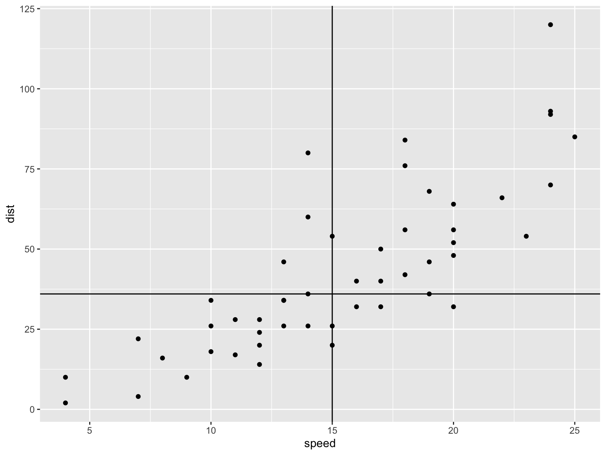

double_x <- function(x){
double_x <- x * 2
return(double_x)
}Example 1: Doubling A Number
. . .
Let’s run it!
double_x(5)[1] 10double_x(NA)[1] NAdouble_x(1:2)[1] 2 4Example 2: Extract First/Last
first_and_last <- function(x) {
first <- x[1]
last <- x[length(x)]
return(c("first" = first, "last" = last))
}. . .
Test it out:
first_and_last(c(4, 3, 1, 8))first last
4 8 Example 2: Testing first_and_last
What if I give first_and_last() a vector of length 1?
first_and_last(7)first last
7 7 . . .
Of length 0?
first_and_last(numeric(0))first
NA . . .
Maybe we want it to be a little smarter.
Example 3: Checking Inputs
Let’s make sure we get an error message when the vector is too small:
stop() ceases running the function and prints the text inside as an error message.
Example 3: Testing Smarter Function
smarter_first_and_last(NA)Error in smarter_first_and_last(NA): Input is not long enough!smarter_first_and_last(c(4, 3, 1, 8))first last
4 8 . . .
Cracking Open Functions
If you type a function name without any parentheses or arguments, you can see its contents:
smarter_first_and_lastfunction (x)
{
if (length(x) < 2) {
stop("Input is not long enough!")
}
else {
first <- x[1]
last <- x[length(x)]
return(c(first = first, last = last))
}
}
<bytecode: 0x14703f4f8>Using functions with apply()
Applying Functions Multiple Times?
Last week, we saw an example where we wanted to take the mean of each column in the swiss data:
for(col_index in 1:ncol(swiss)){
mean_swiss_col <- mean(swiss[,col_index])
names_swiss_col <- names(swiss)[col_index]
print(c(names_swiss_col,round(mean_swiss_col,3)))
}[1] "Fertility" "70.143"
[1] "Agriculture" "50.66"
[1] "Examination" "16.489"
[1] "Education" "10.979"
[1] "Catholic" "41.144"
[1] "Infant.Mortality" "19.943" Isn’t this kind of complex?!
apply(), don’t loop!
Writing loops can be challenging and prone to bugs!!
. . .
The apply() can solve this issue:
- apply a function to values in each row or column of a matrix
- Doesn’t require preallocation
- Can take built-in functions or user-created functions.
Structure of apply()
apply() takes 3 arguments:
- Data (a matrix or data frame)
- Margin (1 applies function to each row, 2 applies to each column)
- Function
apply(DATA, MARGIN, FUNCTION). . .
For example,
apply(swiss, 2, mean) Fertility Agriculture Examination Education
70.14255 50.65957 16.48936 10.97872
Catholic Infant.Mortality
41.14383 19.94255 Example 1
row_max <- apply(swiss,1,max) # maximum in each row
head(row_max, 20) Courtelary Delemont Franches-Mnt Moutier Neuveville Porrentruy
80.20 84.84 93.40 85.80 76.90 90.57
Broye Glane Gruyere Sarine Veveyse Aigle
92.85 97.16 97.67 91.38 98.61 64.10
Aubonne Avenches Cossonay Echallens Grandson Lausanne
67.50 68.90 69.30 72.60 71.70 55.70
La Vallee Lavaux
54.30 73.00 Example 2
apply(swiss, 2, summary) # summary of each column Fertility Agriculture Examination Education Catholic Infant.Mortality
Min. 35.00000 1.20000 3.00000 1.00000 2.15000 10.80000
1st Qu. 64.70000 35.90000 12.00000 6.00000 5.19500 18.15000
Median 70.40000 54.10000 16.00000 8.00000 15.14000 20.00000
Mean 70.14255 50.65957 16.48936 10.97872 41.14383 19.94255
3rd Qu. 78.45000 67.65000 22.00000 12.00000 93.12500 21.70000
Max. 92.50000 89.70000 37.00000 53.00000 100.00000 26.60000**Note:* Matrix output!
Example 3: User-Created Function
scores <- matrix(1:21, nrow=3)
print(scores) [,1] [,2] [,3] [,4] [,5] [,6] [,7]
[1,] 1 4 7 10 13 16 19
[2,] 2 5 8 11 14 17 20
[3,] 3 6 9 12 15 18 21my_function <- function(x){ mean(x+10, na.rm = T) }
apply(scores, 1, my_function)[1] 20 21 22Activity: Writing A Function
In Olympic diving, a panel of 7 judges provide scores. After removing the worst and best scores, the mean of the remaining scores is given to the diver. We’ll write code to calculate this score!
Suppose I get you a vector,
x, of length 7. Write code that will sort the vector from least to greatest, then keep the 2nd-6th elements1.Write a function to calculate a diver’s score:
- Input: Vector of length 7
- Checks: Check that the vector has length 7 (if not, stop!)
- Output: Mean score after removing the lowest and greatest scores.
Calculate the diver’s score given
x <- c(2, 1:5, 3)
Activity: Solution
- Sort and extract elements 2 through 6:
- Answer: Given vector
x, usesort(x)[2:6]
- Answer: Given vector
- Function
divers_score <- function(x){
if(length(x) != 7){
stop("x is not of length 7!")
} else{
x_nofirst_nolast <- sort(x)[2:6]
return(mean(x_nofirst_nolast))
}
}. . .
- Calculate the diver’s score given
x <- c(2, 1:5, 3)
divers_score(x = c(2,1:5,3) )[1] 2.8Activity
These are homework questions!!
Preallocate a matrix of NAs with 3 rows and 8 columns, called
double_matrix. Manually specify the first column equal to the values 1, 2, and 3. Using a nested loop, fill in the matrix, row by row, such that each value is double that to its left.Write an
apply()function to take the median value of each column in thecarsdatasetUsing
ggplot, make a scatterplot of thespeedanddistvariables incars. Then, add an appropriate horizontal and vertical line symbolizing the median value of each variable2.
Answers
- Preallocate a matrix of NAs with 3 rows and 8 columns, called
double_matrix. Manually specify the first column equal to the values 1, 2, and 3. Using a nested loop, fill in the matrix, row by row, such that each value is double that to its left.
double_matrix <- matrix(NA, nrow = 3,ncol = 8)
double_matrix[ , 1] <- 1:3
for(row in 1:3){
for(col in 2:8){
double_matrix[row, col] <- double_matrix[row, col-1] * 2
}
}
double_matrix [,1] [,2] [,3] [,4] [,5] [,6] [,7] [,8]
[1,] 1 2 4 8 16 32 64 128
[2,] 2 4 8 16 32 64 128 256
[3,] 3 6 12 24 48 96 192 384Answers
2. Write an apply() function to take the median value of each column in the cars dataset
median_cars <- apply(cars, 2, median)
median_carsspeed dist
15 36 Answers
3. Make a ggplot
library(ggplot2)
ggplot(cars, aes(speed, dist)) +
geom_point() +
geom_vline(xintercept = median_cars[1]) +
geom_hline(yintercept = median_cars[2])
Homework
Homework 8
Time to work on Homework 8!
Due dates
| # | Homework Due | Peer Review Due |
|---|---|---|
| 1 | 7 October | 12 October |
| 2 | 14 October | 19 October |
| 3 | 21 October | 26 October |
| 4 | 28 October | 2 November |
| 5 | 11 November | 16 November |
| 6 | 18 November | 21 November |
| 7 | 25 November | 30 November |
| 8 | 2 December | 7 December |
| 9 | 9 December | 14 December |